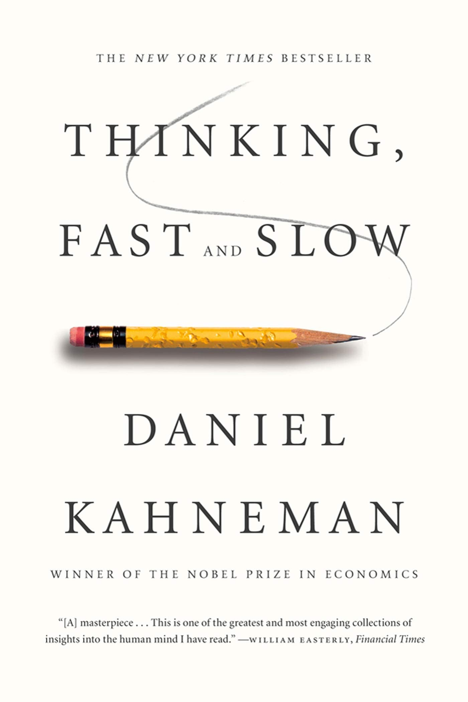
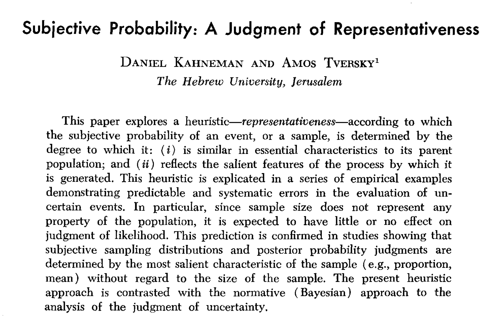
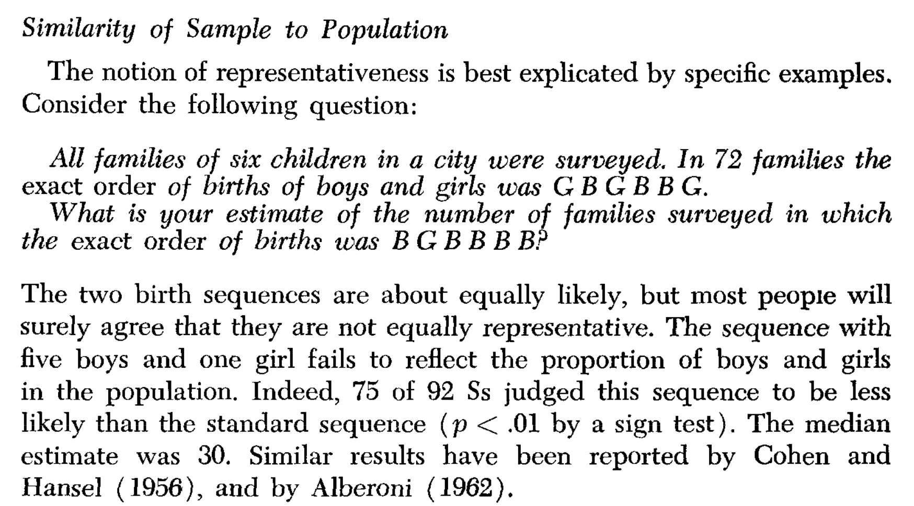
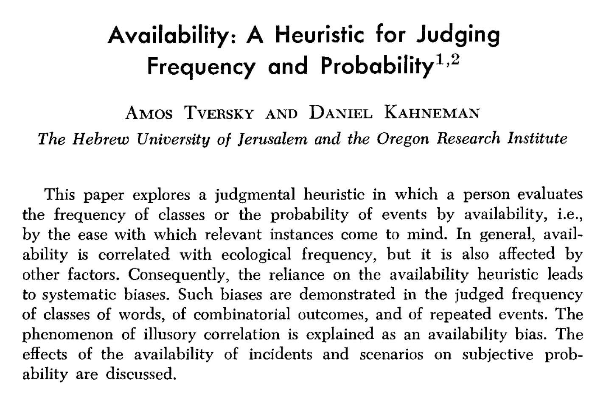
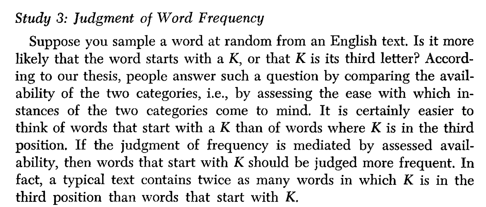
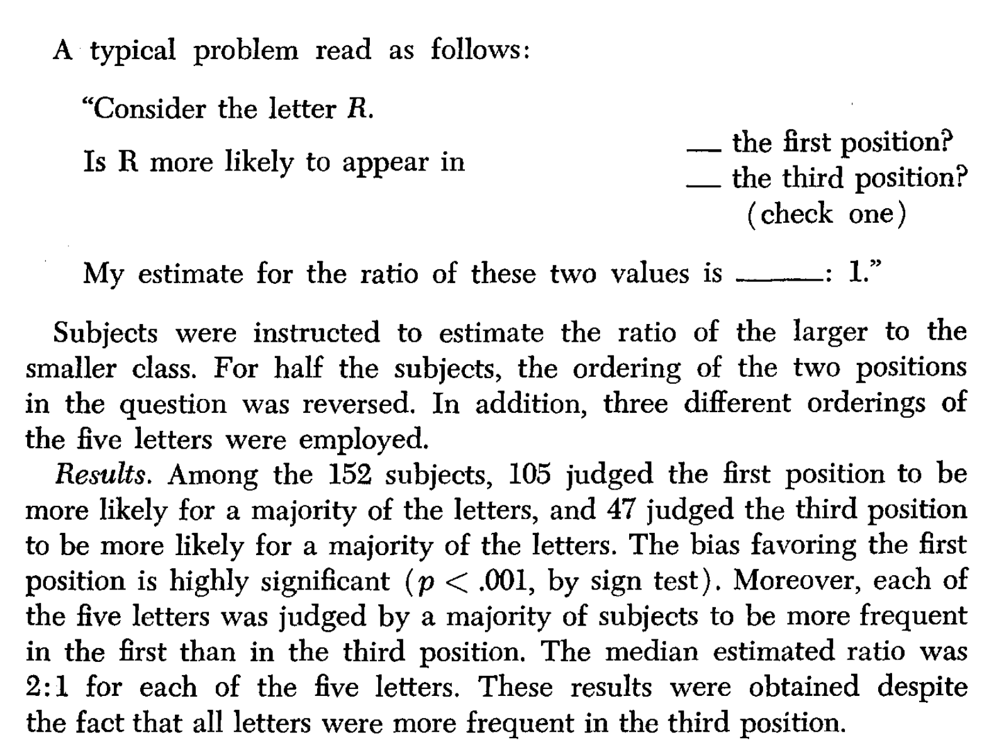
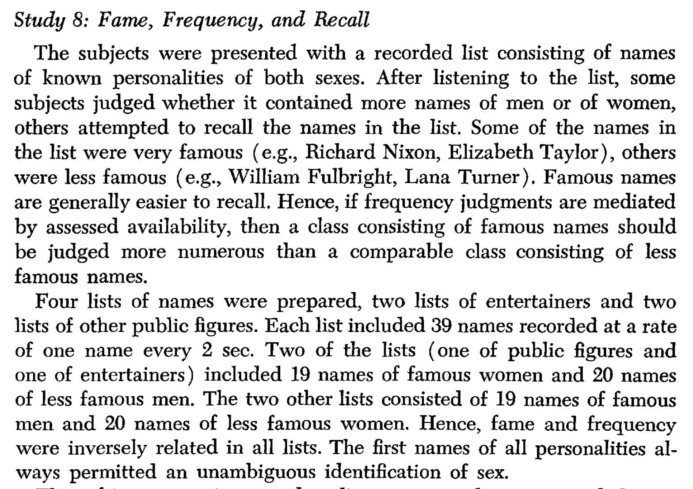
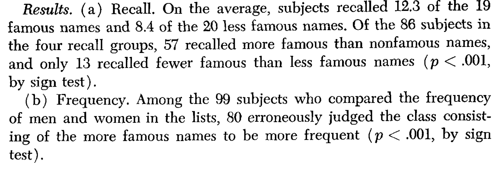

PSYC 2530: Judgment and Decision-making
and cognitive biases
Matthew J. C. Crump
Last compiled 05/06/22
Reminders from last class
There are no textbook chapter readings for this learning module.
Assigned empirical article is on blackboard
- Shen, O., Rabinowitz, R., Geist, R. R., & Shafir, E. (2010). Effect of Background Case Characteristics on Decisions in the Delivery Room. Medical Decision Making, 30(4), 518–522. https://doi.org/10.1177/0272989X09353451
Judgment and Decision-making questions
- How do people judge, evaluate, and assess information in their environment?
- How do people make choices?
- What influences peoples judgments and decisions?
Everyday examples
How do you go about making judgments and decision in everyday life?
Buying a new X
- Research options on the web
- Watch informative youtube videos
- Ask friends
- list pros and cons
- buy the one that is right for you
Buying a new Y
- had a spur of the moment feeling
- liked the thing
- bought it for no good reason
Distinctions
Judgments and decisions can be made in more or less controlled ways
Controlled
- Slow, effortful
- Deliberate
- Employs a reasoning process
Automatic
- Fast, easy
- potentially unconscious
- habitual
Cognitive Biases
There are many biases that shape our judgments and decisions
- Check out the wikipedia list of cognitive biases
Issues with Cognitive Biases
- Useful to be aware of potential biases to our personal judgment and decision making processes
- Biases are not necessarily bad or wrong
- Biases can reflect the operation of basic cognitive processes
Heuristics
- Rules of thumb that give close approximations
- Availability Heuristic
- Representativeness Heuristic
A tale of two papers
- Kahneman, D., & Tversky, A. (1972). Subjective probability: A judgment of representativeness. Cognitive Psychology, 3(3), 430–454. https://doi.org/10.1016/0010-0285(72)90016-3
- Tversky, A., & Kahneman, D. (1973). Availability: A heuristic for judging frequency and probability. Cognitive Psychology, 5(2), 207–232. https://doi.org/10.1016/0010-0285(73)90033-9
Kahneman & Tversky

Judgments of frequency and probability
- How many words do you know?
- What are the chances you will receive more than two calls from a telemarketer today?
- How do people make judgments of frequency and probability?
Kahneman and Tversky (1972)

Big Question and Idea
- Question: How do people judge frequencies and probabilities?
- Idea: People use heuristics that are usually good approximations
- Representativeness heuristic: People judge frequencies and probabilities of events, or sample, based on:
- similarity to parent population
- whether the event has salient stereotypical features
Logical implications
- If people use the representativeness heuristic, then decisions about frequency and probability should be biased by representative examples
Empirical Demonstrations
- Kahneman and Tversky (1972) presented several examples where simple judgments about frequency and probability were biased by representativeness
Similarity of Sample to Population

Looking more random
Tversky & Kahneman (1973)

Big Question and Idea
- Question: How do people judge frequencies and probabilities?
- Idea: People use heuristics that are usually good approximations
- Availability heuristic: People judge frequencies and probabilities of events, or sample, based on:
- how easy particular examples can be brought to mind
- more available instances are thought to be more likely
Logical implications
- If people use the availability heuristic, then decisions about frequency and probability should be biased by availability
- people should also be sensitive to self-assessments of availability
Empirical Demonstrations
- Tversky and Kahneman (1973) presented several examples where people were sensitive to availability, and where availability biased judgments of frequency and probability
Assessments of Availability 1
Question: Are people sensitive to their own ability to generate examples?
Method: Show participants 9 letters (TAPCERHOB or XUZONLCJM)
- Estimate condition: How many words can you make in 2 minutes
- Construct condition: Make as words as you can in 2 minutes
Result: Very high positive correlation between estimate and actual number of words generated
Assessments of Availability 2
Question: Are people sensitive to their own ability to generate examples?
Method: Generate items from categories (flowers, Russian novelists)
- Estimate condition: How many examples can you generate in 2 minutes
- Construct condition: Generate as many examples as you can in 2 minutes
Result: Very high positive correlation between estimate and actual number of examples generated
Inference so far
- People appear to be sensitive to example availability
- People can quickly estimate whether they can produce many or few examples
- Estimates of availability correlated well with how many examples people actually produced
Judgment of Word Frequency

Results

Fame, Frequency and Recall

Results

General Takeaway
- Cognitive processes such as learning and memory can influence judgment and decision-making
- Basic memory processes make some examples easier to bring to mind, and people can be biased by the examples they are thinking about
Cognitive Biases
Try the optional writing assignment for this learning module as a way to explore more cognitive biases
- Check out the wikipedia list of cognitive biases
Read the empirical paper
- Shen, O., Rabinowitz, R., Geist, R. R., & Shafir, E. (2010). Effect of Background Case Characteristics on Decisions in the Delivery Room. Medical Decision Making, 30(4), 518–522. https://doi.org/10.1177/0272989X09353451
What’s next
Take the quiz and complete any additional assignments
This is the last learning module of the semester!
The final exam will occur during final exam week, see blackboard for more information
Congratulations
First, give yourself a congrats for getting this far in the course:

Clapping for you
I was really impressed with your hard work and thoughtful reactions to the writing assignments
Last Words
I hope to meet y’all in person, keep up the hard work, and all the best in your future endeavors!!